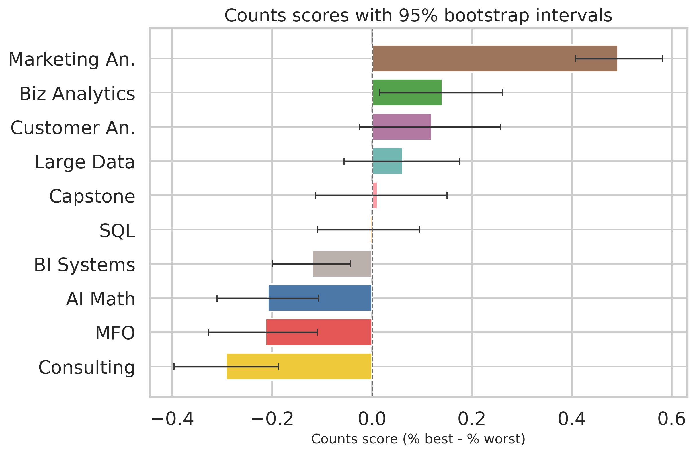
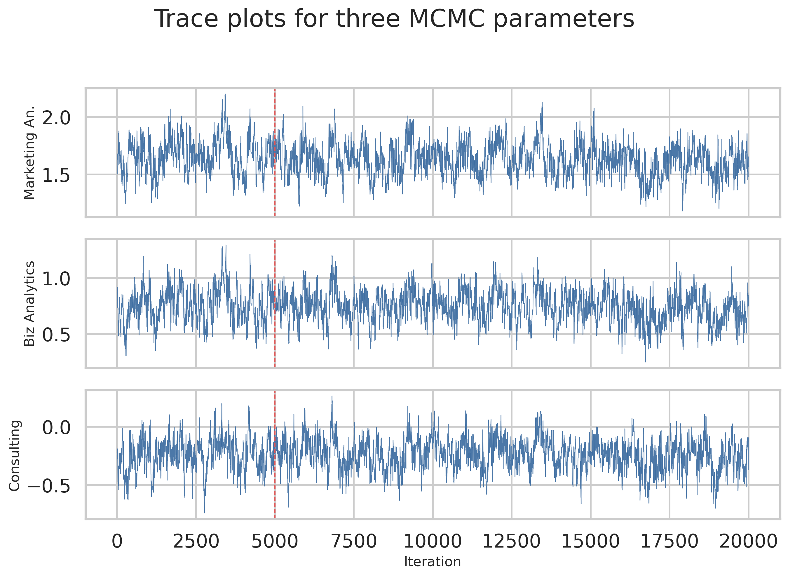
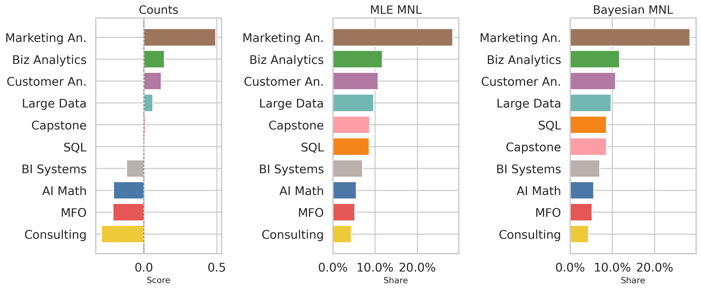

task_checks = (
candidate.groupby(["Record ID", "Task"])
.agg(
n_rows=("Item", "size"),
n_best=("Response", lambda x: (x == 1).sum()),
n_worst=("Response", lambda x: (x == -1).sum()),
n_zero=("Response", lambda x: (x == 0).sum()),
)
.reset_index()
)
valid_tasks = task_checks.query(
"n_rows == 4 and n_best == 1 and n_worst == 1 and n_zero == 2"
)MaxDiff Analysis of MSBA Class Preferences
Counts, MLE, and Bayesian estimation of the MNL model
Introduction
MaxDiff, also called Best-Worst Scaling, is a survey method for measuring relative preference. On each screen, a respondent sees a small set of items and chooses the one they like most and the one they like least. This is useful because people are usually better at making trade-offs than giving stable 1-to-10 ratings.
In this assignment, the items are the 10 core MSBA classes at UCSD Rady. I will estimate class preferences in three ways:
- A simple counts analysis
- A multinomial logit (MNL) model fit by maximum likelihood
- The same MNL model fit by Bayesian methods with Metropolis-Hastings
I expected the three methods to agree on the broad ranking, especially at the top and bottom. That is mostly what happens. The main differences show up in how each method describes uncertainty and how directly it models the choice process.
The Data
The raw file needs one small cleaning step before analysis. The assignment is about 10 classes, but the raw export also contains a second block of two-row tasks that include an unlabeled Item = 11. Those rows do not match the MaxDiff structure described in the homework template, so I keep only the valid 4-row MaxDiff tasks built from the 10 labeled classes.
That sanity check leaves me with a clean MaxDiff dataset that matches the assignment design.
| Metric | Value |
|---|---|
| Task IDs in raw export | 1,275 |
| Valid 4-row MaxDiff tasks kept | 680 |
| Rows dropped | 1,190 |
| Respondents | Tasks per respondent | Items shown per task | Total classes in study | Valid MaxDiff tasks |
|---|---|---|---|---|
| 85 | 8 | 4 | 10 | 680 |
So the cleaned dataset has 85 respondents, 8 tasks per respondent, 4 items per task, and 10 classes in total. That gives 680 valid MaxDiff tasks.
I also checked how often each class was shown. A good MaxDiff design should expose items at similar rates.
| Item | Short | label | Times_shown |
|---|---|---|---|
| 1 | AI Math | MGTA 403 AI Math, Prog., & Analytics (Summer with Nijs) | 273 |
| 2 | SQL | MGTA 464 SQL (Summer with Nijs) | 274 |
| 3 | MFO | MGTA 451 Marketing/Finance/Operations (Summer with Wilbur/Buti/Shin) | 272 |
| 4 | Large Data | MGTA 452 Large Data (Fall with Hansen) | 276 |
| 5 | Biz Analytics | MGTA 453 Business Analytics (Fall with August) | 270 |
| 6 | Consulting | MGTA 444 Analytics Consulting (Winter with Peterson) | 267 |
| 7 | Customer An. | MGTA 455 Customer Analytics (Winter with Nijs) | 276 |
| 8 | Capstone | MGTA 454 Capstone Project (Spring with Advisor) | 272 |
| 9 | Marketing An. | MGTA 495 Marketing Analytics (Spring with Yavorsky) | 274 |
| 10 | BI Systems | MGTA 457 Biz. Intelligence Systems (Fall with Schibler) | 266 |
The design looks balanced. The exposure counts range from 266 to 276, which is very close.
Counts Analysis
The counts approach is the fastest descriptive summary. For each class, I compute:
\[ \text{score}_j = \% \text{best}_j - \% \text{worst}_j \]
If a class is often picked as best and rarely picked as worst, the score is high. If the opposite happens, the score is low.
| Item | Short | label | Times shown | Times best | Times worst | % best | % worst | Score |
|---|---|---|---|---|---|---|---|---|
| 9 | Marketing An. | MGTA 495 Marketing Analytics (Spring with Yavorsky) | 274 | 147 | 12 | 53.6% | 4.4% | 0.493 |
| 5 | Biz Analytics | MGTA 453 Business Analytics (Fall with August) | 270 | 93 | 55 | 34.4% | 20.4% | 0.141 |
| 7 | Customer An. | MGTA 455 Customer Analytics (Winter with Nijs) | 276 | 104 | 71 | 37.7% | 25.7% | 0.120 |
| 4 | Large Data | MGTA 452 Large Data (Fall with Hansen) | 276 | 77 | 60 | 27.9% | 21.7% | 0.062 |
| 8 | Capstone | MGTA 454 Capstone Project (Spring with Advisor) | 272 | 72 | 69 | 26.5% | 25.4% | 0.011 |
| 2 | SQL | MGTA 464 SQL (Summer with Nijs) | 274 | 55 | 56 | 20.1% | 20.4% | -0.004 |
| 10 | BI Systems | MGTA 457 Biz. Intelligence Systems (Fall with Schibler) | 266 | 23 | 55 | 8.6% | 20.7% | -0.120 |
| 1 | AI Math | MGTA 403 AI Math, Prog., & Analytics (Summer with Nijs) | 273 | 33 | 90 | 12.1% | 33.0% | -0.209 |
| 3 | MFO | MGTA 451 Marketing/Finance/Operations (Summer with Wilbur/Buti/Shin) | 272 | 43 | 101 | 15.8% | 37.1% | -0.213 |
| 6 | Consulting | MGTA 444 Analytics Consulting (Winter with Peterson) | 267 | 33 | 111 | 12.4% | 41.6% | -0.292 |

The story is already clear. Marketing Analytics is the strong favorite by a wide margin. The next group is Business Analytics, Customer Analytics, and Large Data. At the bottom, Analytics Consulting has the lowest score, followed by Marketing/Finance/Operations and AI Math.
The middle of the ranking is closer. Capstone and SQL are almost tied, so I would not read too much into their exact order from the counts method alone.
From MaxDiff Data to MNL Choices
The counts method is useful, but it does not model the choice process directly. The MNL model does.
For each task, suppose the screen shows four items, such as \(\{a, b, c, d\}\). The model gives each item a utility coefficient \(\beta_j\). Then the probability that item \(b\) is chosen as best is
\[ P(\text{best} = b) = \frac{\exp(\beta_b)}{\exp(\beta_a) + \exp(\beta_b) + \exp(\beta_c) + \exp(\beta_d)}. \]
After the best item is removed, the probability that item \(c\) is chosen as worst from the remaining three is
\[ P(\text{worst} = c \mid \text{best} = b) = \frac{\exp(-\beta_c)}{\exp(-\beta_a) + \exp(-\beta_c) + \exp(-\beta_d)}. \]
So each MaxDiff task creates two MNL observations:
- one best choice from the full set of 4 items
- one worst choice from the remaining set of 3 items
There is one identification issue. If we add the same constant to every \(\beta_j\), the soft-max probabilities do not change. So only 9 free parameters are identified. I fix item 1 (AI Math) as the reference and set \(\beta_1 = 0\).
task_df = pd.DataFrame(
task_rows,
columns=["Record ID", "Task", "i1", "i2", "i3", "i4", "best", "worst"],
)
task_df.head()| Record ID | Task | i1 | i2 | i3 | i4 | best | worst | |
|---|---|---|---|---|---|---|---|---|
| 0 | 69fb85fbd66b452e6decf4f7 | 1 | 5 | 7 | 4 | 1 | 7 | 1 |
| 1 | 69fb85fbd66b452e6decf4f7 | 2 | 8 | 3 | 10 | 9 | 10 | 8 |
| 2 | 69fb85fbd66b452e6decf4f7 | 3 | 3 | 5 | 2 | 6 | 2 | 6 |
| 3 | 69fb85fbd66b452e6decf4f7 | 4 | 6 | 4 | 8 | 7 | 7 | 6 |
| 4 | 69fb85fbd66b452e6decf4f7 | 5 | 2 | 9 | 7 | 1 | 2 | 1 |
That task-level structure is much easier to use inside the likelihood function.
MNL via Maximum Likelihood
For each task, the log-likelihood contribution is:
\[ \ell(\boldsymbol{\beta}) = \sum_{\text{tasks}} \left[ \beta_{j_b^*} - \log \sum_{j \in \text{shown}} \exp(\beta_j) - \beta_{j_w^*} - \log \sum_{j \in \text{shown} \setminus \{j_b^*\}} \exp(-\beta_j) \right]. \]
Here, \(j_b^*\) is the best item and \(j_w^*\) is the worst item.
def expand_beta(beta_free):
beta = np.zeros(11)
beta[2:] = beta_free
return beta
def loglik(beta_free):
beta = expand_beta(beta_free)
util_shown = beta[shown_mat]
ll_best = beta[best_items] - logsumexp(util_shown, axis=1)
util_remaining = -beta[remaining_mat]
ll_worst = -beta[worst_items] - logsumexp(util_remaining, axis=1)
return float(np.sum(ll_best + ll_worst))
def negloglik(beta_free):
return -loglik(beta_free)I maximize the log-likelihood with scipy.optimize.minimize() and use the inverse Hessian for standard errors.
mle_result = minimize(
negloglik,
np.zeros(9),
method="trust-ncg",
jac=grad_negloglik,
hess=hess_negloglik,
)| Item | Short | label | Beta (MLE) | SE | Share of preference |
|---|---|---|---|---|---|
| 9 | Marketing An. | MGTA 495 Marketing Analytics (Spring with Yavorsky) | 1.630 | 0.146 | 28.4% |
| 5 | Biz Analytics | MGTA 453 Business Analytics (Fall with August) | 0.744 | 0.142 | 11.7% |
| 7 | Customer An. | MGTA 455 Customer Analytics (Winter with Nijs) | 0.656 | 0.142 | 10.7% |
| 4 | Large Data | MGTA 452 Large Data (Fall with Hansen) | 0.555 | 0.140 | 9.7% |
| 8 | Capstone | MGTA 454 Capstone Project (Spring with Advisor) | 0.443 | 0.140 | 8.7% |
| 2 | SQL | MGTA 464 SQL (Summer with Nijs) | 0.438 | 0.137 | 8.6% |
| 10 | BI Systems | MGTA 457 Biz. Intelligence Systems (Fall with Schibler) | 0.236 | 0.137 | 7.0% |
| 1 | AI Math | MGTA 403 AI Math, Prog., & Analytics (Summer with Nijs) | 0.000 | nan | 5.6% |
| 3 | MFO | MGTA 451 Marketing/Finance/Operations (Summer with Wilbur/Buti/Shin) | -0.067 | 0.139 | 5.2% |
| 6 | Consulting | MGTA 444 Analytics Consulting (Winter with Peterson) | -0.239 | 0.141 | 4.4% |
The MLE results are easy to read in share form. If all 10 classes were shown on one screen, the model predicts:
- Marketing Analytics would get about 28.4% of choices
- Business Analytics would get about 11.7%
- Customer Analytics would get about 10.7%
The ranking is actually identical to the counts ranking in this dataset. That is a nice sign that the preference signal is strong. The middle classes are still close, but the overall order is stable.
One note about interpretation: AI Math has no standard error listed for its raw \(\beta\) because I fixed it at zero as the reference item. That is just a normalization choice. It does not mean there is no uncertainty about AI Math’s relative preference.
MNL via Bayesian Estimation
Now I fit the same model with Bayes’ rule:
\[ \pi(\boldsymbol{\beta} \mid \boldsymbol{y}) \propto L(\boldsymbol{\beta}) \cdot \pi(\boldsymbol{\beta}). \]
I use a weakly informative prior on the 9 free coefficients:
\[ \boldsymbol{\beta}_{2:10} \sim N(\mathbf{0}, 10I). \]
Then I sample from the posterior with a random-walk Metropolis-Hastings algorithm.
def log_post(beta_free):
prior = -0.5 * np.sum(beta_free**2 / prior_var)
prior -= 0.5 * len(beta_free) * np.log(2 * np.pi * prior_var)
return loglik(beta_free) + prior
def mh_sampler(beta0, n_iter, step, seed=2026):
rng_local = np.random.default_rng(seed)
beta = beta0.copy()
lp = log_post(beta)
draws = np.empty((n_iter, len(beta0)))
accept = 0
for t in range(n_iter):
beta_star = beta + rng_local.normal(0, step, size=len(beta0))
lp_star = log_post(beta_star)
if np.log(rng_local.random()) < lp_star - lp:
beta = beta_star
lp = lp_star
accept += 1
draws[t] = beta
return draws, accept / n_iterI tried a few proposal step sizes on short pilot chains and chose one that landed inside the suggested acceptance-rate range.
| Proposal step | Acceptance rate |
|---|---|
| 0.060 | 42.6% |
| 0.070 | 35.3% |
| 0.080 | 27.3% |
| 0.090 | 25.1% |
The step size 0.08 worked well, so I used it in the main run. I then ran 20,000 iterations and dropped the first 5,000 as burn-in. The final acceptance rate was 28.2%.

These traces look like the kind of “fuzzy caterpillar” we want. I do not see a long drift after burn-in, which suggests the chain is exploring a stable posterior region.
| Item | Short | label | Posterior mean beta | 95% CI for beta | Posterior mean share |
|---|---|---|---|---|---|
| 9 | Marketing An. | MGTA 495 Marketing Analytics (Spring with Yavorsky) | 1.629 | 1.366 to 1.897 | 28.4% |
| 5 | Biz Analytics | MGTA 453 Business Analytics (Fall with August) | 0.743 | 0.466 to 1.004 | 11.7% |
| 7 | Customer An. | MGTA 455 Customer Analytics (Winter with Nijs) | 0.657 | 0.402 to 0.925 | 10.8% |
| 4 | Large Data | MGTA 452 Large Data (Fall with Hansen) | 0.553 | 0.294 to 0.835 | 9.7% |
| 2 | SQL | MGTA 464 SQL (Summer with Nijs) | 0.437 | 0.160 to 0.695 | 8.6% |
| 8 | Capstone | MGTA 454 Capstone Project (Spring with Advisor) | 0.436 | 0.173 to 0.705 | 8.6% |
| 10 | BI Systems | MGTA 457 Biz. Intelligence Systems (Fall with Schibler) | 0.229 | -0.030 to 0.478 | 7.0% |
| 1 | AI Math | MGTA 403 AI Math, Prog., & Analytics (Summer with Nijs) | 0.000 | 0.000 to 0.000 | 5.6% |
| 3 | MFO | MGTA 451 Marketing/Finance/Operations (Summer with Wilbur/Buti/Shin) | -0.073 | -0.341 to 0.202 | 5.2% |
| 6 | Consulting | MGTA 444 Analytics Consulting (Winter with Peterson) | -0.239 | -0.505 to 0.016 | 4.4% |
The Bayesian results are very close to the MLE results. The posterior mean shares are almost the same, and the posterior uncertainty is also similar to the classical standard errors. The only visible ranking difference is that SQL and Capstone swap places, which makes sense because they are extremely close in the middle of the pack.
Comparing the Three Methods
The next table puts all three methods side by side.
| Item | Short | label | Counts score | Counts rank | MLE share | MLE rank | Bayes share | Bayes rank |
|---|---|---|---|---|---|---|---|---|
| 9 | Marketing An. | MGTA 495 Marketing Analytics (Spring with Yavorsky) | 0.493 | 1 | 28.4% | 1 | 28.4% | 1 |
| 5 | Biz Analytics | MGTA 453 Business Analytics (Fall with August) | 0.141 | 2 | 11.7% | 2 | 11.7% | 2 |
| 7 | Customer An. | MGTA 455 Customer Analytics (Winter with Nijs) | 0.120 | 3 | 10.7% | 3 | 10.8% | 3 |
| 4 | Large Data | MGTA 452 Large Data (Fall with Hansen) | 0.062 | 4 | 9.7% | 4 | 9.7% | 4 |
| 8 | Capstone | MGTA 454 Capstone Project (Spring with Advisor) | 0.011 | 5 | 8.7% | 5 | 8.6% | 6 |
| 2 | SQL | MGTA 464 SQL (Summer with Nijs) | -0.004 | 6 | 8.6% | 6 | 8.6% | 5 |
| 10 | BI Systems | MGTA 457 Biz. Intelligence Systems (Fall with Schibler) | -0.120 | 7 | 7.0% | 7 | 7.0% | 7 |
| 1 | AI Math | MGTA 403 AI Math, Prog., & Analytics (Summer with Nijs) | -0.209 | 8 | 5.6% | 8 | 5.6% | 8 |
| 3 | MFO | MGTA 451 Marketing/Finance/Operations (Summer with Wilbur/Buti/Shin) | -0.213 | 9 | 5.2% | 9 | 5.2% | 9 |
| 6 | Consulting | MGTA 444 Analytics Consulting (Winter with Peterson) | -0.292 | 10 | 4.4% | 10 | 4.4% | 10 |

The agreement here is strong.
- All three methods put Marketing Analytics in first place by a large margin.
- All three methods put Analytics Consulting in last place.
- The top four classes are the same across methods.
- The only tiny disagreement is around SQL and Capstone, where the posterior means are almost tied.
This is also a nice way to see what each method adds.
- The counts analysis is fast and intuitive, but it is only descriptive.
- The MNL model uses the actual choice mechanism, so every shown item contributes information through the soft-max probabilities.
- The Bayesian version makes uncertainty for derived quantities like preference shares very easy to report. I just transform every posterior draw and then summarize the distribution.
Discussion
For a non-technical reader, the main substantive result is simple: students in this sample most prefer Marketing Analytics, and they also like Business Analytics, Customer Analytics, and Large Data. The least preferred classes are Analytics Consulting, Marketing/Finance/Operations, and AI Math.
Methodologically, the three tools are useful for slightly different jobs.
- Counts is great for a quick descriptive dashboard.
- MLE MNL is a good choice when I want a model-based ranking and a single classical estimate to report.
- Bayesian MNL is best when I care about uncertainty on simulated outcomes, preference shares, or future extensions like individual-level preference models.
There are also a few caveats. This was a self-selected sample of MSBA students, so the results may not generalize to all students. Preferences may also depend on timing, past coursework, concentration interests, and where a student is in the program.
If I had more time, I would do two next steps. First, I would estimate a hierarchical Bayes version to recover respondent-level heterogeneity. Second, I would explore whether first-year and second-year students rank these classes differently.